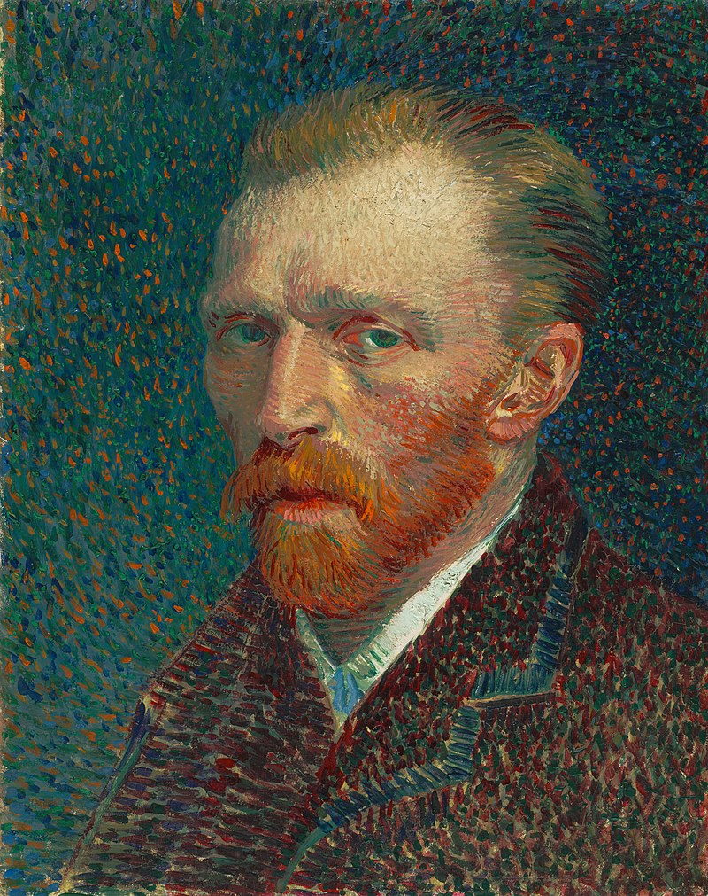

 painter informationVincent Willem van Gogh 30 March 1853-29 July 1890 was a Dutch Post-Impressionist painter who is among the most famous and influential figures in the history of Western art. In just over a decade, he created approximately 2100 artworks, including around 860 oil paintings, most of them in the last two years of his life. His oeuvre includes landscapes, still lifes, portraits, and self-portraits, most of which are characterised by bold colours and dramatic brushwork that contributed to the rise of expressionism in modern art. Van Gogh's work was beginning to gain critical attention before he died from a self-inflicted gunshot at age 37.[5] During his lifetime, only one of van Gogh's paintings, The Red Vineyard, was sold